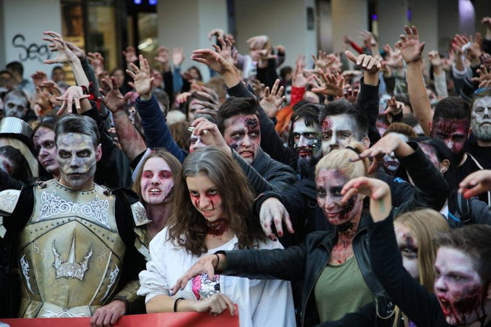

Home
page1
page2
page3
page4
Home
page1
page2
page3
page4
The Zombie Walk Festival is a charity based event held across the world where people gather in a public area, get into zombie costumes, and publicly do a zombie walk.
The event is on the 30th of October at 6pm, this is because October is the time of Halloween.
The event itself is rather simple, expect a lot of people dressed up as zombies doing a zombie walk.
Strangely enough, this event was intially an accident that happened at the 2000 GenCon to poke fun at Vampire LARPers, a stunt done in good nature for fun. When zombie movies became popular, so did this event.